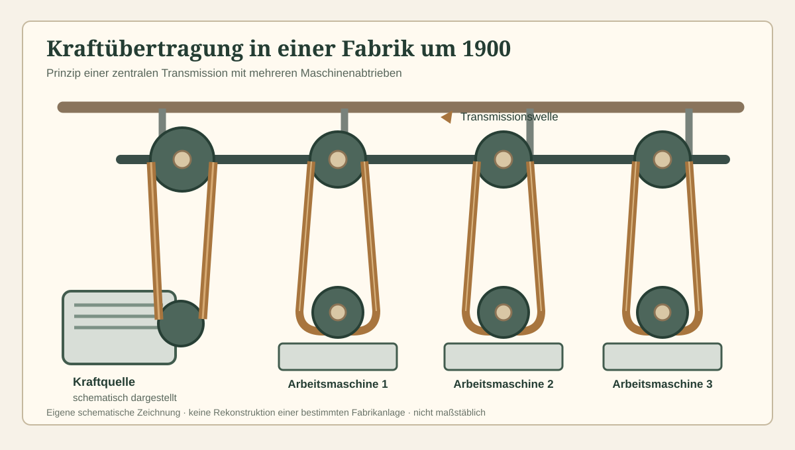

Ein Treibriemen verbindet eine antreibende mit einer angetriebenen Riemenscheibe. In historischen Fabriken konnte so die Kraft einer zentralen Maschine auf zahlreiche Arbeitsplätze verteilt werden.

Wie eine Transmission funktioniert
Die Kraftquelle setzt eine Hauptwelle in Bewegung. Riemen und Scheiben übertragen die Drehbewegung auf weitere Wellen oder einzelne Maschinen. Die Auslegung hängt unter anderem von Drehzahl, Riemenspannung und Belastung ab.

Wasser, Dampf und Elektrizität
Bei Krafft ist die Entwicklung von Wasserkraft zu zusätzlichen Kraftquellen dokumentiert. Die Jubiläumsschrift beschreibt auch den Einsatz von Dampf und Elektrizität. Die schematische Darstellung zeigt ein technisches Prinzip und keine genaue Rekonstruktion der Krafft-Anlage.

Betrieb und Wartung
Spannung, Fluchtung der Scheiben, Zustand der Verbindungen und Sauberkeit beeinflussten den Lauf. Treibriemen mussten überprüft, nachgestellt und bei Verschleiss instand gesetzt oder ersetzt werden.
Warum historische Transmissionen heute noch betrieben werden →